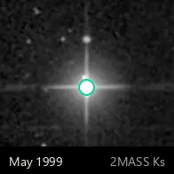

Gigante roja pulsante (variable de tipo Mira) · M
R Draconis
Una gigante roja que se hincha y se contrae, y cuyo brillo sube y baja en unos 245 días.

Una gigante roja cerca del final de su vida, que se hincha y se contrae cada 245 días. Cada imagen abarca aproximadamente un mes. La estrella es tan brillante que satura los detectores, así que la herramienta mide en su lugar su resplandor exterior. La curva de brillo sube y baja con el pulso.
Qué mirar
Cada imagen abarca aproximadamente un mes. Esta estrella es tan brillante que su núcleo satura todos los detectores, así que la herramienta mide en su lugar su débil resplandor exterior. La curva de brillo muestra el pulso: máximo en julio de 2025, aproximadamente la mitad de brillo ese otoño y de nuevo en ascenso en las imágenes más recientes.
SPHEREx tiene 2497 exposiciones de este punto, del 24 de abril de 2025 al 27 de septiembre de 2026.
Abrir R Draconis en Chronosphere
A lo largo de un cuarto de siglo

Fuentes: SPHEREx, NASA/JPL-Caltech, IRSA · SIMBAD · Gaia DR3 · 2MASS · WISE, NEOWISE